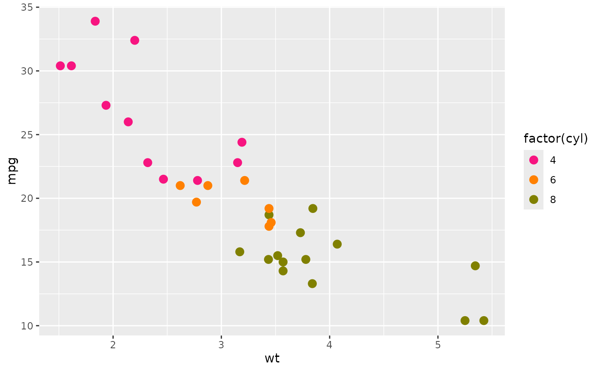
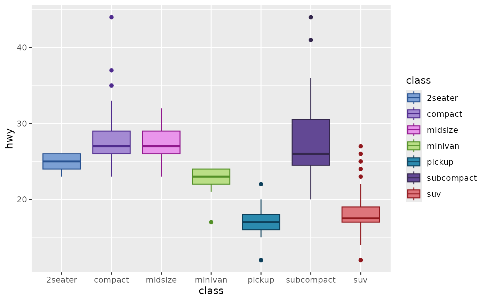
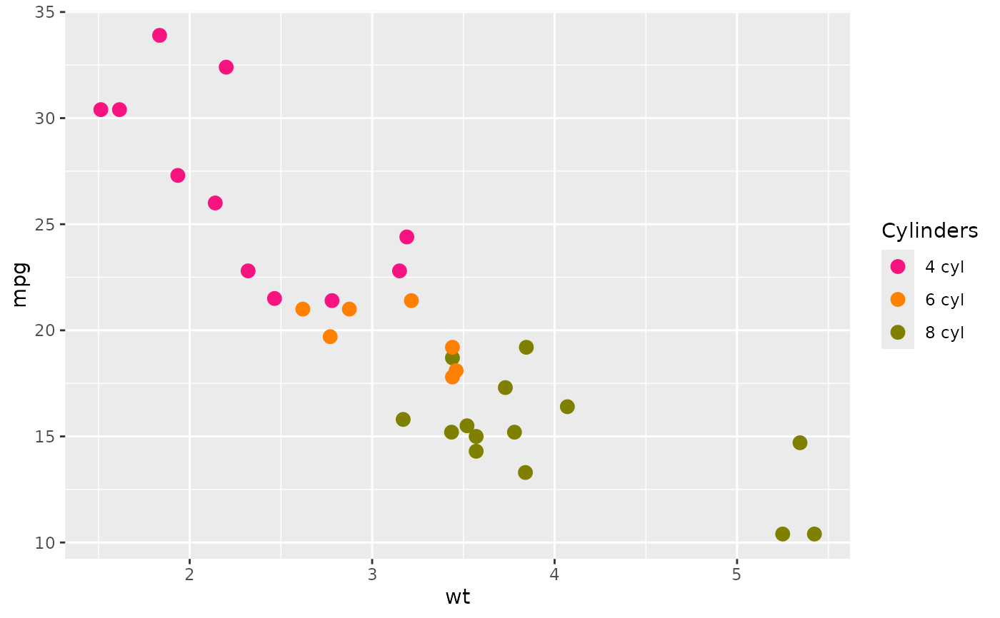
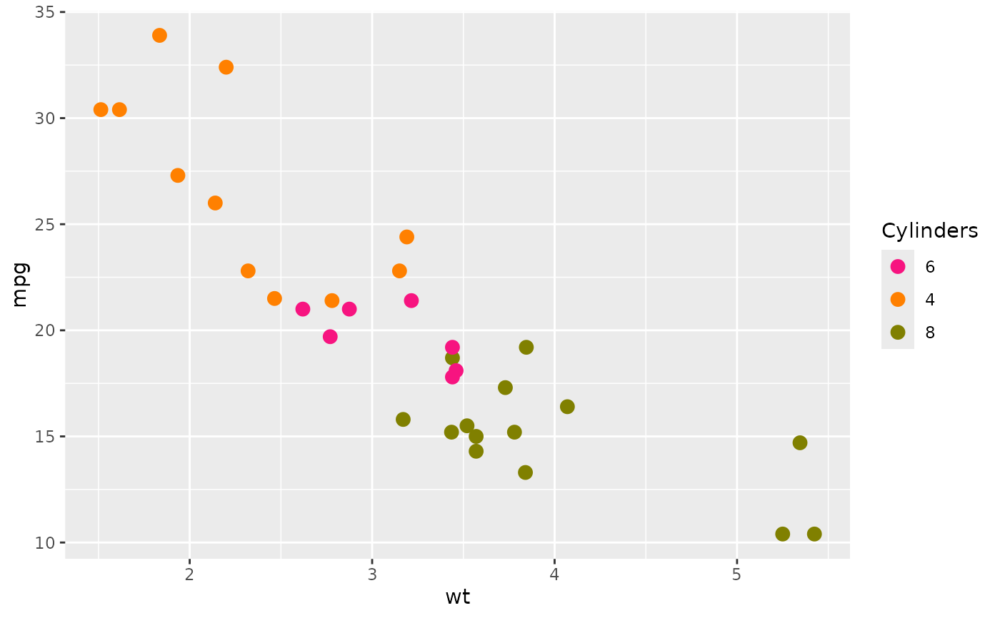

A collection of discrete colour scales that use palettes which mirror the colour schemes available in GraphPad Prism.
scale_colour_prism(palette = "colors", ...) scale_color_prism(palette = "colors", ...)
Arguments
| palette |
|
|---|---|
| ... | Arguments passed on to
|
Examples
library(ggplot2) ## base plot base <- ggplot(mtcars, aes(x = wt, y = mpg, colour = factor(cyl))) + geom_point(size = 3) ## works pretty much the same as ggplot2 scale_colour_manual base + scale_colour_prism(palette = "candy_bright")## try combining the ggprism colour and fill scales base2 <- ggplot(mpg, aes(x = class, y = hwy, fill = class, colour = class)) + geom_boxplot() base2 + scale_fill_prism(palette = "floral") + scale_colour_prism(palette = "floral")## change colour scale title in legend base + scale_colour_prism( palette = "candy_bright", name = "Cylinders" )## change colour labels in legend base + scale_colour_prism( palette = "candy_bright", name = "Cylinders", label = c("4 cyl", "6 cyl", "8 cyl") )## change colour labels in legend with a function base + scale_colour_prism( palette = "candy_bright", name = "Cylinders", label = function(x) paste(x, "cyl") )## change order of colours in legend base + scale_colour_prism( palette = "candy_bright", name = "Cylinders", label = function(x) paste(x, "cyl"), breaks = c(8, 4, 6) )## to change which colour is assigned to which cyl ## you need to change the factor levels in the underlying data base <- ggplot(mtcars, aes(x = wt, y = mpg, colour = factor(cyl, levels = c(6, 4, 8)))) + geom_point(size = 3) base + scale_colour_prism( palette = "candy_bright", name = "Cylinders" )